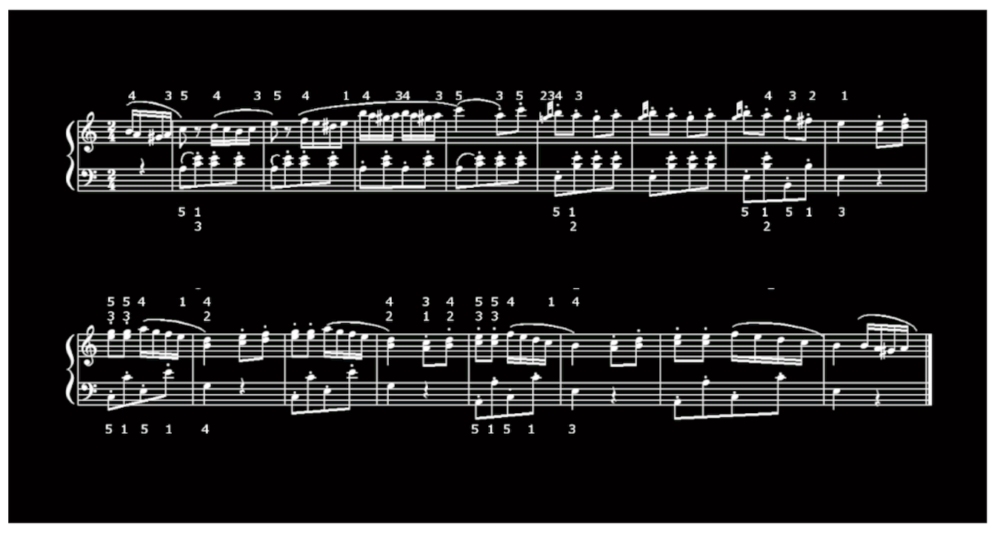

ファイル読込
チャンクを保存
パターンチャンク
フレーズチャンク
高難度チャンク
音符列で頭出し
チャンクで頭出し
←
→

AnnotationTemplateForDevelop
AnnotationTemplateForDevelop
AnnotationTemplateForDevelop
AnnotationTemplateForDevelop
AnnotationTemplateForDevelop
AnnotationTemplateForDevelop